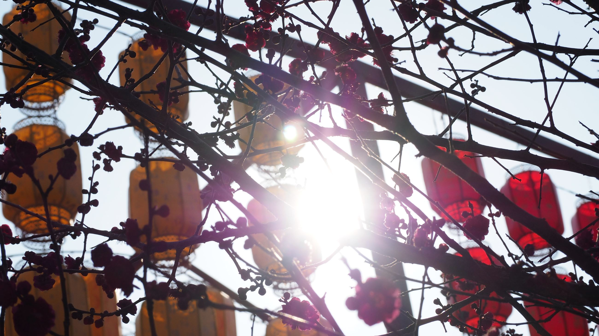

02 — 重点故事 / KEY STORY
庙会那天下午，太阳从两排灯笼中间烧了过去。
On the afternoon of the temple fair the sun burned its way through the two rows of lanterns. The plum was already out, and the light between them lasted only a few minutes.
我拍的不是地方，
是光落在地方上的方式。
I am not photographing places. I am photographing the way light lands on them — and how long it is willing to stay.
第一批照片没有构图，也没有人教我怎么构图。我把它们按拍下来的顺序排在一起，因为顺序本身就是我学会看的时间线。
我通常比现场的人早到半小时。不是为了抢光，而是为了看清一个地方在没有人的时候是什么样子。
每张照片统一做一次对比与饱和的校准，让不同时间、不同机器拍的东西看起来像同一次展览。

On the afternoon of the temple fair the sun burned its way through the two rows of lanterns. The plum was already out, and the light between them lasted only a few minutes.
About the photographer

我拍的不是地方，是光落在地方上的方式。
校园是一间很大的暗房，古庙把天空切成一条缝，长途旅行只教给我一件事：先看，再决定要不要拍。
所以我的照片常常没有人在画面中心，但总有一处正在被照亮。